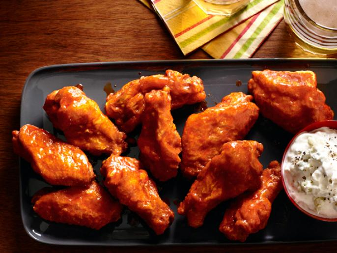

Buffalo Wings

Buffalos don't have wings. Here's a recipe for Buffalo Wings
Great for watching Sports and eating.
Ingredients
For the Dip
- 1/2 cup sour cream
- 1/2 cup crumbled blue cheese
- 1/4 cup of mayonnaise
- 1 small clove garlic, chopped
- 1 tablespoon milk or buttermilk
- Juice of 1/2 lemon
- Kosher salt and freshly ground pepper
For the wings
- Vegetable or peanut oil, for frying
- 1 cup all-purpose flour
- 1 tablespoon paprika
- 3 pounds chicken wings, split at the joints, tips removed
- 1 1/2 cups of Frank's RedHot sauce
- 1 stick unsalted butter
- 2 tablespoons honey
Steps
- Make the dip: Pulse the sour cream, blue cheese, mayonnaise, garlic, milk and lemon juice in a food processor until combined but still chunky. Season with salt and pepper. Cover and refrigerate until ready to serve.
- Make the wings: Heat 1 inch of vegetable oil in a large deep skillet over high heat until a deep-fry thermometer registers 375 degrees F. Set a rack on a rimmed baking sheet
- Mix the flour and paprika in a shallow dish. Dredge the wings in the flour mixture to coat, tapping off the excess. Fry the wings in batches, turning as needed, until cooked through and deep golden brown, about 15 minutes. (Return the oil to 375 degrees F between batches.) Remove with tongs and transfer to the rack to drain.
- Meanwhile, combine the hot sauce, butter and honey in a medium pot over medium heat until the butter melts. Continue to cook, stirring, until the sauce thickens slightly, about 10 minutes. Reserve one-quarter of the sauce for serving. Add the cooked wings to the pot and toss with the remaining sauce. Serve with the blue cheese dip and reserved sauce.